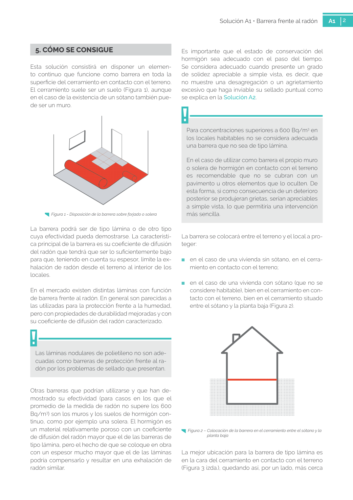

<!doctype html>
<html lang="es"><head><meta charset="utf-8">
<meta name="viewport" content="width=device-width, initial-scale=1">
<title>GUIA · Página física 2</title><link rel="stylesheet" href="../estilo.css">
</head><body>
<nav><a href="../index.html">Índice</a> › <a href="../doc/guia-pdf-d97e92f2f27e-sin-fecha-1e18ef06574e.html">GUIA</a></nav>

<h1>GUIA · Página física 2</h1>
<header class="meta"><p><strong>Solucion A1 Barrera frente al radon</strong> · edición sin-fecha · capa guia</p>
<p>Documento <code>GUIA-PDF-d97e92f2f27e</code> · SHA-256 del PDF <code>1e18ef06574e87590ff769e33ce39fcdc557ca6f46fe4c8ccf23f268dd432808</code></p>
<p>Página física 2 de 5.</p>
<p><a href="../../contenido/docs/GUIA-PDF-d97e92f2f27e/sin-fecha__1e18ef06574e/fuente.pdf#page=2">Copia fiel del PDF fuente</a> · <a href="https://www.codigotecnico.org/pdf/GuiasyOtros/GuiaRadon/Solucion_A1_Barrera_frente_al_radon.pdf">Fuente oficial</a></p>
<p><a href="https://www.codigotecnico.org/Guias/GuiaRadon.html">Ficha de la disposición en la fuente oficial</a></p>
<div class="cita"><p><a href="../../contenido/docs/GUIA-PDF-d97e92f2f27e/sin-fecha__1e18ef06574e/fuente.pdf#page=5">Créditos y autoría en el PDF fuente</a>. Reproducción con cita de fuente y autores.</p>
<p>Permiso literal: Se permite la reproducción total o parcial del contenido de este do­ Edición actual: septiembre 2020 cumento siempre y cuando se cite la fuente original y a sus autores.</p>
<details><summary>Leer los créditos completos y la autoría</summary><pre class="literal">                                                                Solución A1 • Barrera frente al radón   A1  55


                                                                     Este documento ha sido elaborado por el Instituto de ciencias
                                                         de la construcción Eduardo Torroja (IETcc) bajo la supervisión
                                                         de la Dirección General de Agenda Urbana y Arquitectura del
                                                                             Ministerio de Transportes, Movilidad y Agenda Urbana (MITMA).

                                                             SECRETARÍA GENERAL DE
                                                  AGENDA URBANA                                                                     Y VIVIENDA                              MINISTERIO            GOBIERNO                                                                              El IETcc, perteneciente al Consejo Superior de Investigaciones                          DE                               TRANSPORTES,                                          MOVILIDAD
            DE ESPAÑA      Y                         AGENDA                                URBANA                                                        DIRECCIÓN                                                                GENERAL                                                                      DE
                                                  AGENDA URBANA Y ARQUITECTURA                   Científicas (CSIC), es el centro de investigación en edificación
                                                         de referencia en España. La Unidad de Calidad en la Construc­
                                                                       ción del IETcc asesora al MITMA en la elaboración del Código
                              MINISTERIO            GOBIERNO                         DE                               CIENCIA                                             Técnico de la Edificación que, desde el año 2019, cuenta con la            DE ESPAÑA                                E INNOVACIÓN
                                                                   sección HS6 Protección frente a la exposición al radón.

                                                                    Dirección y Coordinación:
                                                                            Ministerio de Transportes, Movilidad y Agenda Urbana
Esta ficha forma parte de una serie de documentos englobados        Isabel Marcos Anasagasti
en una misma publicación, cuyo objetivo es constituir una he­       Raquel Lara Campos
rramienta de ayuda para el diseño de soluciones de protección       Eduardo González de Prado
frente al radón:                                                                  Instituto de ciencias de la construcción Eduardo Torroja CSIC
                                                                                      Pilar Linares Alemparte
■  Guía de rehabilitación frente al radón

Fichas de soluciones:                                                 Autoras:
                                                                                      Pilar Linares Alemparte
A: De aislamiento del edificio                                                                   Sonia García Ortega
■       Solución A1. Barrera frente al radón
■       Solución A1-1. Barrera frente al radón. Encuentros              Colaboradoras:
■       Solución A2. Sellado de fisuras, grietas, encuentros y juntas         Virginia Sánchez Ramos
■       Solución A3. Puertas estancas                                   Karina Angélica García Pardo
■       Solución A4. Creación de sobrepresión
                                                                               Edita:
B: De reducción del radón antes de que penetre en los locales       Centro de Publicaciones Secretaría General Técnica
  a proteger                                                               Ministerio de Transportes, Movilidad y Agenda Urbana©

■       Solución B1. Ventilación del espacio de contención: cá­                                                                  Entidad colaboradora:
                 mara de aire                                                                Consejo Superior de Investigaciones Científicas · CSIC
■       Solución B2. Ventilación del espacio de contención: loca­                                                                             Ministerio de Ciencia e Innovación
                      les no habitables
■       Solución B3. Despresurización del terreno                        Catálogo de publicaciones de la Administración General
                                                                         del Estado: publicacionesoficiales.boe.es
C: De reducción del radón tras penetrar en los locales a proteger
■       Solución C1. Ventilación de los locales habitables                  Centro virtual de publicaciones del Ministerio de Transpor­
                                                                                         tes, Movilidad y Agenda Urbana: www.mitma.gob.es

Fichas de ejemplos:
                                                                     Página web del Código Técnico de la Edificación:
■      Ejemplo A1+B3. Barrera frente al radón + despresurización          www.codigotecnico.org
                    con red de tubos
■      Ejemplo A2+B1. Sellado + ventilación de la cámara sanitaria      Maquetación y diseño gráfico:
■      Ejemplo A2+B3. Sellado + despresurización con red de tubos       Lapizmente. Estrategia • Diseño Gráfico
■      Ejemplo A2+C1. Sellado + ventilación mecánica de los loca-                                                                     Los contenidos o ideas recogidas en este documento pertenecen a
                          les habitables                                   sus autores. Este documento está basado en el conocimiento dispo­
                                                                                    nible en el momento de su publicación. No se aceptará por las institu­
Publicación completa:                                                    ciones ni los autores implicados responsabilidad de ningún tipo por el
ISBN: 978-84-498-1045-9                                             uso de estas recomendaciones. Las figuras tienen carácter ilustrativo
NIPO: 796-20-136-5                                                   y no deben interpretarse como detalles constructivos.
1ª edición: septiembre 2020                                                               Se permite la reproducción total o parcial del contenido de este do­
Edición actual: septiembre 2020                                    cumento siempre y cuando se cite la fuente original y a sus autores.</pre></details></div>
<div class="aviso"><strong>Alcance y límites</strong><ul><li>Extracción automática sin revisión técnica humana completa. Contraste tablas, fórmulas, notas y excepciones con el PDF. La edición disponible no determina la vigencia ni la aplicabilidad a un proyecto.</li><li>Guia o documento divulgativo; no es texto normativo.</li><li>Extracción automática; el cotejo humano está pendiente.</li><li>Semántica y tablas no equivalen a validación exhaustiva.</li></ul></div></header>
<nav><a href="guia-pdf-d97e92f2f27e-sin-fecha-1e18ef06574e__p0001.html">← Página 1</a> · <a href="guia-pdf-d97e92f2f27e-sin-fecha-1e18ef06574e__p0003.html">Página 3 →</a></nav>
<p>Formato: <a href="../../contenido/docs/GUIA-PDF-d97e92f2f27e/sin-fecha__1e18ef06574e/pagina/p0002.md">Texto de la página (Markdown)</a></p>
<p><a href="../../contenido/docs/GUIA-PDF-d97e92f2f27e/sin-fecha__1e18ef06574e/bloque/p0002.json">JSON de bloques</a></p>
<pre class="literal">2
Solución A1 • Barrera frente al radón
A1
2
5. CÓMO SE CONSIGUE
Esta solución consistirá en disponer un elemen­
to continuo que funcione como barrera en toda la
superficie del cerramiento en contacto con el terreno. 
El cerramiento suele ser un suelo (Figura 1), aunque 
en el caso de la existencia de un sótano también pue­
de ser un muro.
  Figura 1 - Disposición de la barrera sobre forjado o solera
La barrera podrá ser de tipo lámina o de otro tipo 
cuya efectividad pueda demostrarse. La característi­
ca principal de la barrera es su coeficiente de difusión 
del radón que tendrá que ser lo suficientemente bajo 
para que, teniendo en cuenta su espesor, limite la ex­
halación de radón desde el terreno al interior de los 
locales.
En el mercado existen distintas láminas con función 
de barrera frente al radón. En general son parecidas a 
las utilizadas para la protección frente a la humedad, 
pero con propiedades de durabilidad mejoradas y con 
su coeficiente de difusión del radón caracterizado.
Las láminas nodulares de polietileno no son ade­
cuadas como barreras de protección frente al ra­
dón por los problemas de sellado que presentan.
Otras barreras que podrían utilizarse y que han de­
mostrado su efectividad (para casos en los que el 
promedio de la medida de radón no supere los 600 
Bq/m3) son los muros y los suelos de hormigón con­
tinuo, como por ejemplo una solera. El hormigón es 
un material relativamente poroso con un coeficiente 
de difusión del radón mayor que el de las barreras de 
tipo lámina, pero el hecho de que se coloque en obra 
con un espesor mucho mayor que el de las láminas 
podría compensarlo y resultar en una exhalación de 
radón similar. 
Es importante que el estado de conservación del 
hormigón sea adecuado con el paso del tiempo.
Se considera adecuado cuando presente un grado 
de solidez apreciable a simple vista, es decir, que 
no muestre una desagregación o un agrietamiento
excesivo que haga inviable su sellado puntual como 
se explica en la Solución A2.
Para concentraciones superiores a 600 Bq/m3 en 
los locales habitables no se considera adecuada 
una barrera que no sea de tipo lámina.
En el caso de utilizar como barrera el propio muro 
o solera de hormigón en contacto con el terreno 
es recomendable que no se cubran con un 
pavimento u otros elementos que lo oculten. De 
esta forma, si como consecuencia de un deterioro 
posterior se produjeran grietas, serían apreciables 
a simple vista, lo que permitiría una intervención 
más sencilla.
La barrera se colocará entre el terreno y el local a pro­
teger:
	
■
en el caso de una vivienda sin sótano, en el cerra­
miento en contacto con el terreno;
	
■
en el caso de una vivienda con sótano (que no se 
considere habitable), bien en el cerramiento en con­
tacto con el terreno, bien en el cerramiento situado 
entre el sótano y la planta baja (Figura 2).
  Figura 2 – Colocación de la barrera en el cerramiento entre el sótano y la 
planta baja
La mejor ubicación para la barrera de tipo lámina es 
en la cara del cerramiento en contacto con el terreno
(Figura 3 izda.), quedando así, por un lado, más cerca 
</pre>
<figure><a href="../../contenido/docs/GUIA-PDF-d97e92f2f27e/sin-fecha__1e18ef06574e/figura/p0002.png"></a><figcaption>Página visual 2, para contrastar fórmulas, tablas y figuras.</figcaption></figure><h2>Tablas extraídas</h2><p>Datos candidatos: compruebe celdas y notas en el PDF.</p><ul><li><a href="../../contenido/docs/GUIA-PDF-d97e92f2f27e/sin-fecha__1e18ef06574e/tabla/p0002_t01.json">p0002_t01.json</a></li></ul>
<h2>Segmentos que incluyen esta página</h2><ul>
<li><a href="../apartado/guia-pdf-d97e92f2f27e-sin-fecha-1e18ef06574e__a0006.html">a0006 · 2. CUÁNDO SE UTILIZA</a></li>
<li><a href="../apartado/guia-pdf-d97e92f2f27e-sin-fecha-1e18ef06574e__a0007.html">a0007 · 5. CÓMO SE CONSIGUE</a></li>
</ul>
<footer>Generado estáticamente desde el corpus normalizado; sin JavaScript ni servicios externos. El HTML es una vista reproducible; conserve la fuente y la edición al citar.</footer>
</body></html>
